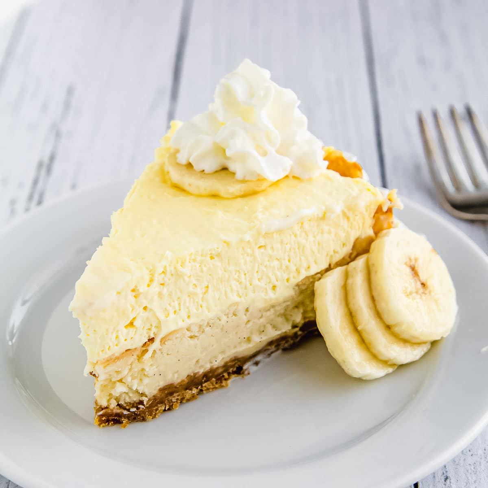

Home
Banana Cheesecake with Banana Cream Pie Topping

Rich creamy cheesecake with Oreo cookie crust and fat-free cream cheese
Ingredients
- 2 cups crushed Oreos
- 1 tablespoon melted butter
- 3 (8 oz) packages fat free softened cream cheese
- 3/4 cup white sugar
- 3 eggs
- 1/2 cup mashed banana
- 1 teaspoon vanilla extract
- 2.5 cups cold milk
- 2 (3.4 oz) packages instant vanilla pudding mix
- 1 cup fat-free frozen whipped topping, thawed
- 1 sliced banana
Instructions
- Preheat the oven to 350 degrees F (175 degrees C).
- Mix cookie crumbs and butter together in a bowl. Press mixture into the bottom of a 9-inch springform pan.
- Mix cream cheese and sugar together in a bowl using an electric mixer until smooth and well blended. Add eggs 1 at a time, mixing after each addition. Stir in mashed banana and vanilla extract. Pour mixture into crust in the springform pan.
- Bake in the preheated oven until center is almost set, 50 to 60 minutes. Cool completely, at least 1 hour, before removing from pan.
- Whisk milk and pudding mix together in a bowl until thoroughly combined. Fold in whipped topping.
- Arrange sliced bananas on top of cooled cheesecake. Spread pudding mixture on top. Chill at least 3 hours before serving.